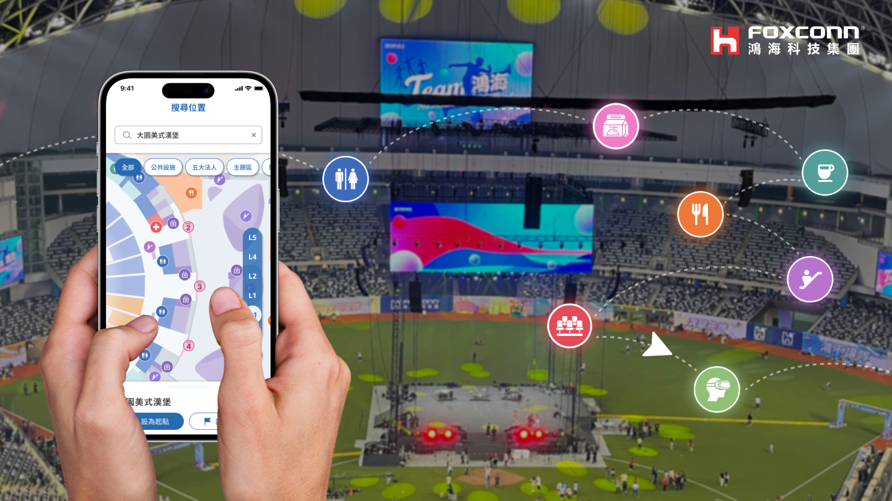
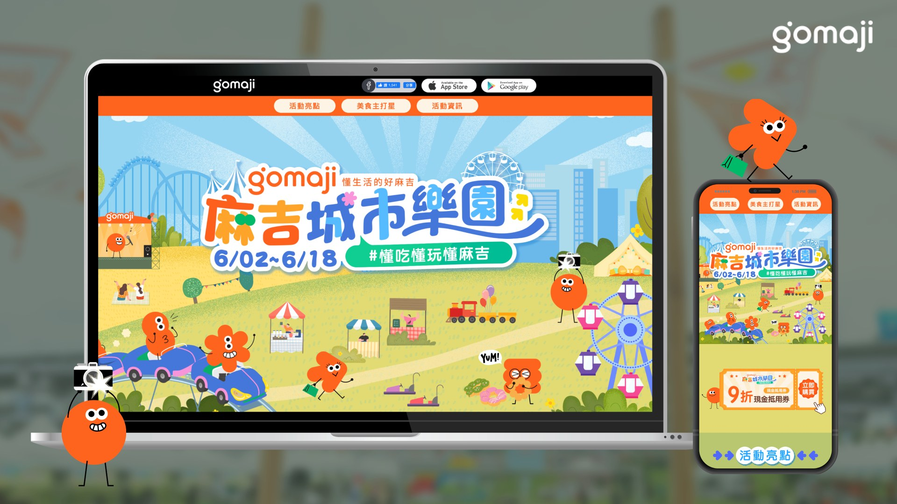
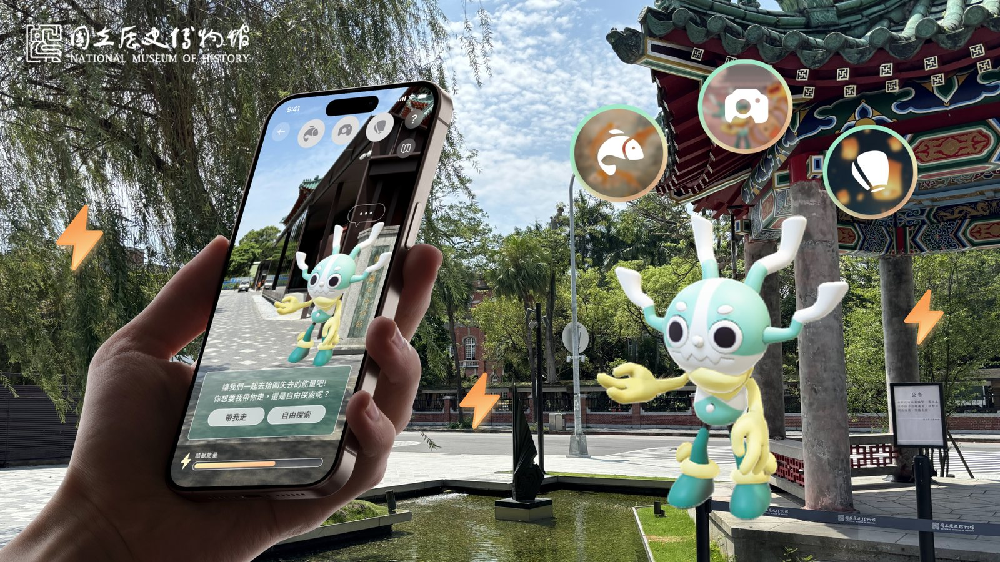

Selected Exhibitions.

Puli Brewery
AI Navigation System
Shipped in 90 working days: one design system across 13 sites, 4 languages, and AR/360° experiences. A century-old brewery's visitors span solo travelers, tour groups, and walk-ins, entering through mobile, kiosk, or QR code — instead of three separate products, I built a single visual language and component system that scaled consistently across every device and touchpoint.
VIEW CASE STUDY ↗2025 Foxconn Carnival
Navigation App
Served 35,000 employees and family members across 7 interlocking floors of the Taipei Dome. I led an accessibility-first wayfinding system built on a color-coded department zoning scheme and a shared component library, keeping the app and web experience visually and functionally consistent across both platforms.
VIEW CASE STUDY ↗

Gomaji City Park
Campaign
80% coupon redemption rate. GOMAJI's first city-wide carnival after a full brand relaunch had 3 weeks to do two jobs at once: introduce the new brand identity to existing members, and convert that attention into ticket sales. A single-page scrolling design merged campaign storytelling with a direct purchase and redemption flow.
VIEW CASE STUDY ↗National Museum
of History AR Experience
Designed 4 AR interactive challenges and 6 hidden discovery points for the museum's outdoor courtyard, shipped inside the museum's existing app rather than as a separate one — balancing playful engagement for families with the venue's need to preserve a dignified atmosphere around its collection.
VIEW CASE STUDY ↗